OS-35CpGs-Validation-ASH23#
Load Data#
Show code cell source
import pandas as pd
from source.cox_lasso_functions import *
input_path = '../Data/Intermediate_Files/'
output_path = '../Data/Processed_Data/'
raw_coefs = pd.read_csv(output_path + 'multivariate_cox_lasso/ewas_cog_os_raw_coefs.csv', index_col=0)
mean_coefs = set_cutoff(coefs=raw_coefs,threshold=0.95)
df_validation = pd.read_pickle(
input_path+'df_validation.pkl')[mean_coefs.index]
validation_clinical_data = pd.read_csv(input_path+'validation_clinical_data.csv',
low_memory=False, index_col=0)
print(
f' Dataset (df) contains {df_validation.shape[1]} columns (5mC nucleotides/probes) and {df_validation.shape[0]} rows (samples).')
Dataset (df) contains 35 columns (5mC nucleotides/probes) and 201 rows (samples).
Transform to M-values#
Show code cell source
import math
import numpy as np
from scipy import stats
import seaborn as sns
import matplotlib.pyplot as plt
def beta2m(val):
'''Transfrom beta-values into m-values'''
return math.log2(val/(1-val))
x_test_m = df_validation.apply(np.vectorize(beta2m))
# Get correlation between Beta and M Values
corr = x_test_m.corrwith(df_validation, axis=0)
# Glue them into same dataframe for vizualization purposes
beta_to_m_values = pd.concat([x_test_m.mean(),df_validation.mean(),corr],axis=1,
keys=['M Values','Beta Values','Correlation'],
join= 'inner')
def draw_scatterplot(df,x,y,hue,s):
# Define theme
sns.set_theme(style="white")
f, ax = plt.subplots(figsize=(6, 6))
sns.despine(f, left=False, bottom=False)
# Define scatterplot
sns.scatterplot(x=x, y=y,
hue=hue, palette='flare', s=s,
sizes=(1, 8), linewidth=0, alpha=0.8,
data=df, ax=ax)
# Calculate Pearson’s correlation coefficient (r)
# and its two-tailed p-value (p)
r,p = stats.pearsonr(df[x],df[y])
# Annotate r and p into the plot
plt.annotate(fr'$\rho$: {r:.5f}, p-value: {p:.5f}',
xy=(6.0, 0.01), xycoords='data',
ha='right', va='center',
bbox={'boxstyle': 'round', 'facecolor': 'none',
'edgecolor': 'lightgray'})
# Define plot specs
plt.xlabel(x)
plt.ylabel(y)
plt.title(r"Concordance by Pearson's correlation coefficient ($\rho$) in " + str(len(df)) + ' CpG probes',
fontsize = 12)
# Save plot figure
# plt.savefig('../Figures/Beta_to_M_Values_' + str(len(df)) + '_scatterplot' + '.png',
# bbox_inches='tight', dpi=300)
return(plt.show())
draw_scatterplot(df=beta_to_m_values,x='M Values',y='Beta Values',hue='Correlation',s=20)
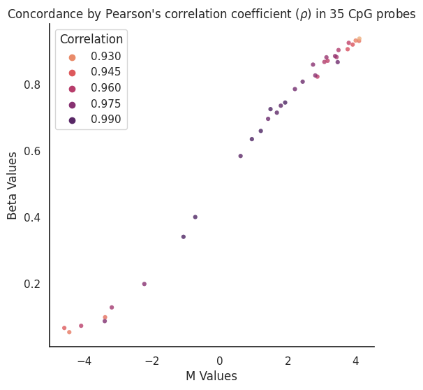
Standardize Data#
Here we will use the same scaler as the one used in the previous notebook (discovery cohort).
Show code cell source
def standardize_data(df, reference_df):
"""Standardize data using mean and standard deviation of reference dataset"""
# Keep only columns that are in both datasets
reference_df = reference_df.loc[:, df.columns]
# Standardize data
df_z = (df - reference_df.mean()) / reference_df.std()
return df_z
# Read top CpGs selected from previous code file (univariate cox-ph EWAS)
ewas_top_cpgs = pd.read_csv(output_path+'ewas_dmr/ewas_top_cpgs.csv', index_col=0)
# Standardize data
x_test_m_z = standardize_data(df= x_test_m, reference_df= ewas_top_cpgs)
Generate Model Results#
Validation dataset#
Show code cell source
score_name = 'MethylScoreAML_Px'
df_test, threshold = generate_coxph_score(coef_mean=mean_coefs,
x=x_test_m_z,
df=validation_clinical_data,
score_name=score_name,
train_test=0.2208,
rpart_outcome='os.time')
Continuous score cut at the value of 0.2208 for ['Normal', 't (9;11)', '11q23', 'inv (16)', 'Miscell', 't (8;21)', 'Insuff', nan]
Show code cell source
sns.histplot(data=df_test,x=score_name, bins=70, hue = score_name + ' Categorical' )
# add vertical line at threshold and third quartile
plt.axvline(threshold ,color='red', linestyle='--')
# add legend
plt.legend({'Discovery cohort cutoff' + ' (' + str(threshold) + ')',})
plt.title('Distribution of ' + score_name + ' in StJude trials')
Text(0.5, 1.0, 'Distribution of MethylScoreAML_Px in StJude trials')
Kaplan-Meier Plots#
Overall study population#
Show code cell source
# Import Plotting Functions
from source.data_visualization_functions import *
draw_kaplan_meier(scorename=score_name,
df=df_test,
save_survival_table=False,
save_plot=False,
show_ci=False,
add_risk_counts=False,
trialname='StJude trials')
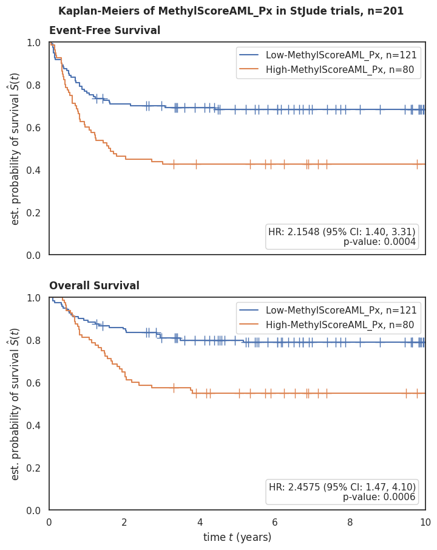
Per risk group#
Show code cell source
draw_kaplan_meier(scorename=score_name,
df=df_test[df_test['Risk Group'] == 'High Risk'],
save_plot=False,
save_survival_table=False,
add_risk_counts=False,
trialname='StJude trials, High Risk Group')
draw_kaplan_meier(scorename=score_name,
df=df_test[df_test['Risk Group'] == 'Low Risk'],
save_plot=False,
save_survival_table=False,
add_risk_counts=False,
trialname='StJude trials, Low Risk Group')
draw_kaplan_meier(scorename=score_name,
df=df_test[df_test['Risk Group'] == 'Standard Risk'],
save_plot=False,
save_survival_table=False,
add_risk_counts=False,
trialname='StJude trials, Standard Risk Group')
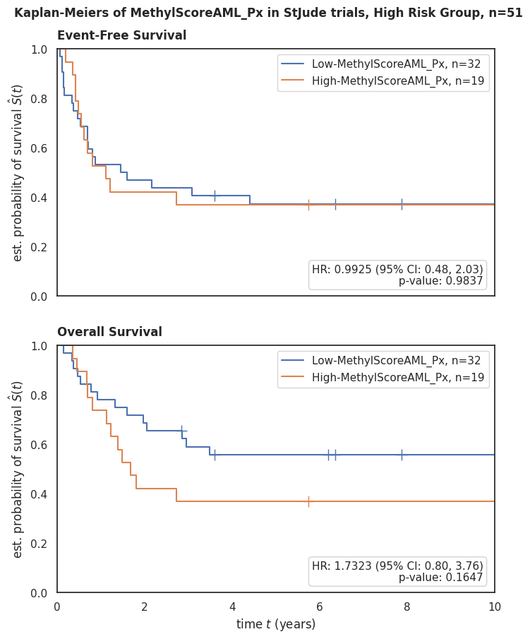
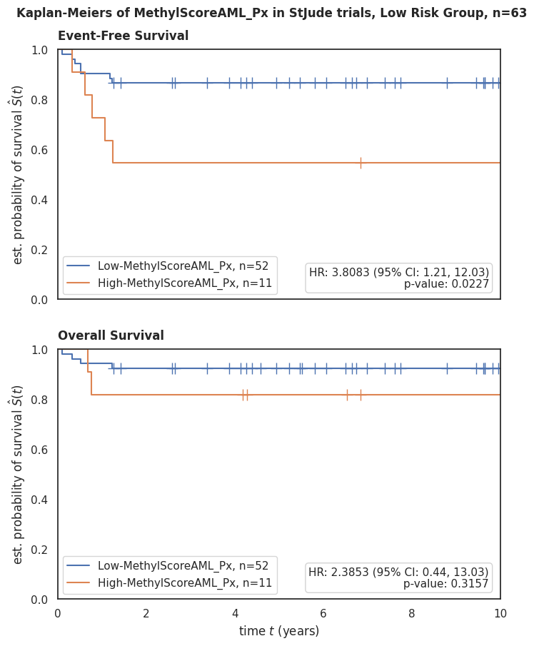
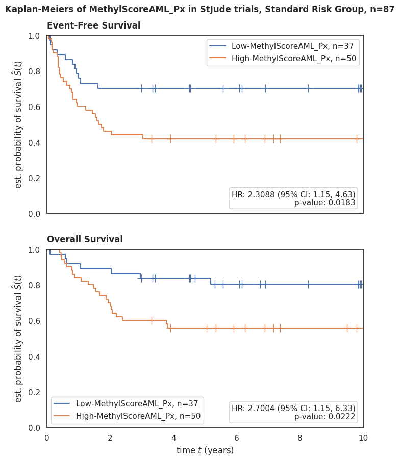
Forest Plots#
With MRD 1#
Show code cell source
draw_forest_plot(time='os.time',
event='os.evnt',
df=df_test,
trialname='StJude trials:',
scorename=score_name,
save_plot=False)
draw_forest_plot(time='efs.time',
event='efs.evnt',
df=df_test,
trialname='StJude trials:',
scorename=score_name,
save_plot=False)
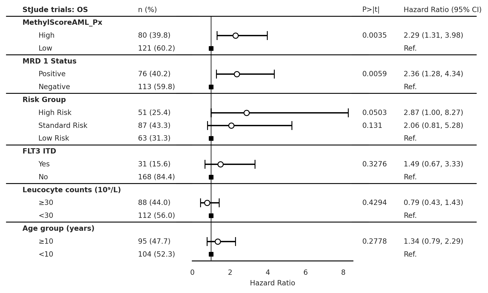
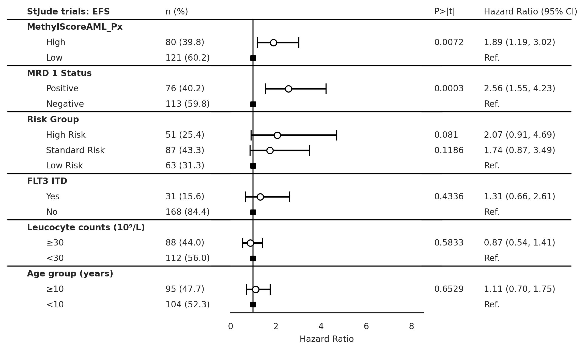
Without MRD 1#
Show code cell source
draw_forest_plot_noMRD(time='os.time',
event='os.evnt',
df=df_test,
trialname='StJude trials:',
scorename=score_name,
save_plot=False)
draw_forest_plot_noMRD(time='efs.time',
event='efs.evnt',
df=df_test,
trialname='StJude trials:',
scorename=score_name,
save_plot=False)
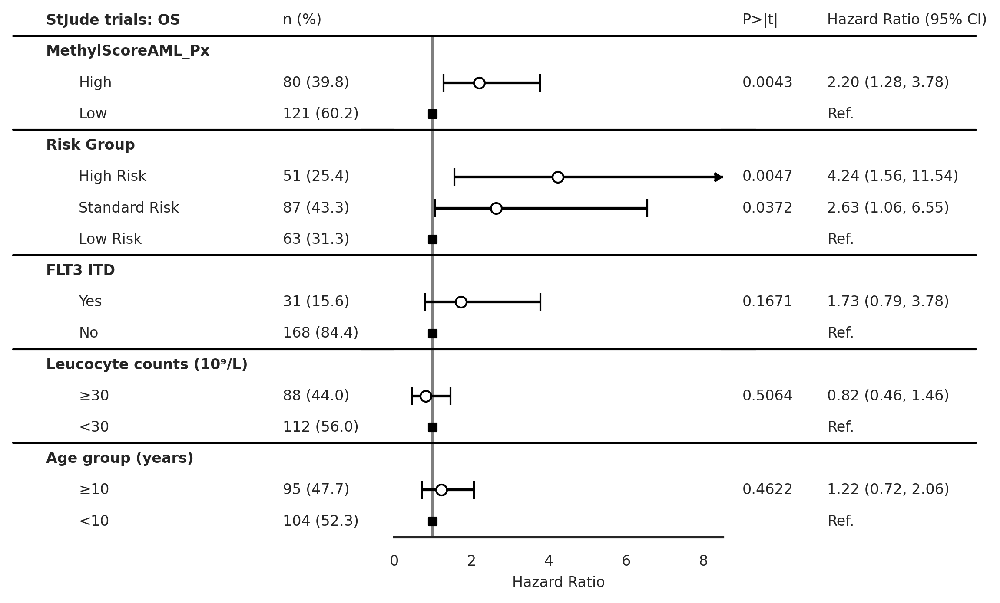
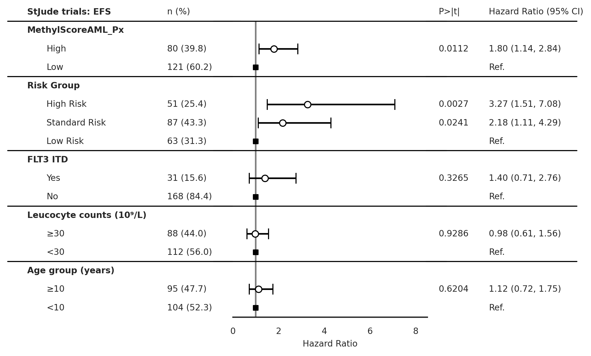
ROC AUC#
Show code cell source
# Your current preprocessing
df_test['Risk Group bins'] = df_test['Risk Group'].replace({'Low Risk':0, 'Standard Risk':0.5, 'High Risk':1})
df_test['MRD 1 bins'] = df_test['MRD 1 Status'].replace({'Negative':0, 'Positive':1})
df_test2 = df_test[['os.evnt', 'MethylScoreAML_Px_cat_bin', 'Risk Group bins', 'MRD 1 bins']].dropna()
# rename column `MethylScoreAML_Px_cat_bin` to `MethylScoreAML Px`
df_test2 = df_test2.rename(columns={'MethylScoreAML_Px_cat_bin':'MethylScoreAML_Px'})
# Add new columns based on standardized values
df_test2['MRD1 + Risk Group'] = df_test['MRD 1 bins'] + df_test['Risk Group bins']
df_test2['MRD1 + Risk Group + MethylScore'] = df_test['MRD 1 bins'] + df_test['Risk Group bins'] + df_test['MethylScoreAML_Px']
import matplotlib.pyplot as plt
from sklearn.metrics import roc_curve, auc
from sklearn.preprocessing import LabelBinarizer
def plot_roc_auc(df, score_columns, outcome_column, trial_name='validation cohort'):
"""
Plots the ROC AUC curves for multiple models given a dataframe and multiple score columns.
Parameters:
- df (pd.DataFrame): Dataframe containing the score and outcome columns.
- score_columns (list of str): List of names of columns that contain the scores.
- outcome_column (str): The name of the column that contains the true outcomes.
Returns:
None
"""
plt.figure()
plt.title('ROC AUC in ' + trial_name + ', n={}'.format(len(df)))
# plot random guessing line
plt.plot([0, 1], [0, 1], 'r--')
# binarize the outcome variable
lb = LabelBinarizer()
lb.fit(df[outcome_column])
y = lb.transform(df[outcome_column])
# Loop over score_columns to plot multiple ROC curves
for score_column in score_columns:
# calculate the fpr and tpr for all thresholds of the classification
fpr, tpr, threshold = roc_curve(y, df[score_column])
roc_auc = auc(fpr, tpr)
# plot ROC curve for this score_column
plt.plot(fpr, tpr, label=f'{score_column} AUC = %0.2f' % roc_auc)
# set x and y limits
plt.xlim([0, 1])
plt.ylim([0, 1])
# set x and y labels
plt.ylabel('True Positive Rate')
plt.xlabel('False Positive Rate')
# add legend
plt.legend(loc='lower right')
plt.show()
# Example Usage:
score_columns = ['MethylScoreAML_Px', 'Risk Group bins', 'MRD 1 bins', 'MRD1 + Risk Group', 'MRD1 + Risk Group + MethylScore']
outcome_column = 'os.evnt'
plot_roc_auc(df_test2, score_columns, outcome_column)
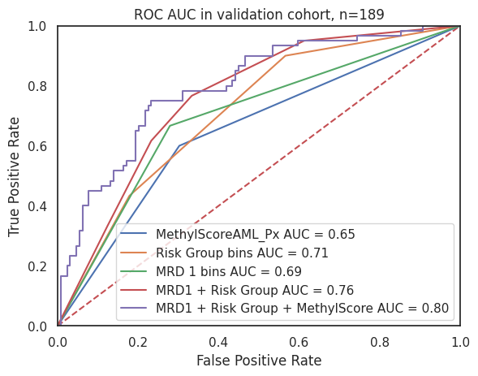
Box Plots#
Show code cell source
draw_boxplot(df=validation_clinical_data,x='Risk Group', y=score_name,
order=['High Risk', 'Standard Risk', 'Low Risk'],
trialname='StJude trials', hue=score_name + ' Categorical',
save_plot=False, figsize=None)
draw_boxplot(df=validation_clinical_data,x='MRD 1 Status', y=score_name,
order=['Positive','Negative'],
trialname='StJude trials', hue=score_name + ' Categorical',
save_plot=False, figsize=None)
draw_boxplot(df=validation_clinical_data,x='Primary Cytogenetic Code', y=score_name,
order='auto',
trialname='StJude trials', hue=score_name + ' Categorical',
save_plot=False, figsize=None)
p-value annotation legend:
ns: p <= 1.00e+00
*: 1.00e-02 < p <= 5.00e-02
**: 1.00e-03 < p <= 1.00e-02
***: 1.00e-04 < p <= 1.00e-03
****: p <= 1.00e-04
High Risk vs. Standard Risk: Kruskal-Wallis independent samples (pairwise between groups) with Bonferroni correction, P_val:3.150e-01 Stat=2.628e+00
Standard Risk vs. Low Risk: Kruskal-Wallis independent samples (pairwise between groups) with Bonferroni correction, P_val:8.551e-11 Stat=4.428e+01
High Risk vs. Low Risk: Kruskal-Wallis independent samples (pairwise between groups) with Bonferroni correction, P_val:2.836e-07 Stat=2.848e+01
p-value annotation legend:
ns: p <= 1.00e+00
*: 1.00e-02 < p <= 5.00e-02
**: 1.00e-03 < p <= 1.00e-02
***: 1.00e-04 < p <= 1.00e-03
****: p <= 1.00e-04
Positive vs. Negative: Kruskal-Wallis independent samples (pairwise between groups) with Bonferroni correction, P_val:1.003e-01 Stat=2.701e+00
Stacked Bar Plots#
Show code cell source
draw_stacked_barplot(df=validation_clinical_data,x='MRD 1 Status', y=score_name,
order=['Positive','Negative'],
trialname='StJude trials', hue=score_name + ' Categorical',
save_plot=False, figsize=None)
draw_stacked_barplot(df=validation_clinical_data,x='Risk Group', y=score_name,
order=['High Risk', 'Standard Risk', 'Low Risk'],
trialname='StJude trials', hue=score_name + ' Categorical',
save_plot=False, figsize=None, fontsize=9)
draw_stacked_barplot(df=validation_clinical_data,x='Primary Cytogenetic Code', y=score_name,
order='auto',
trialname='StJude trials', hue=score_name + ' Categorical',
save_plot=False, figsize=None, fontsize=6)
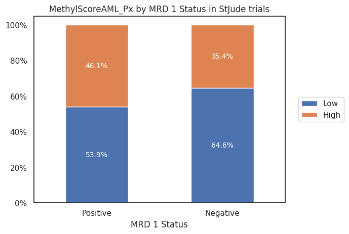
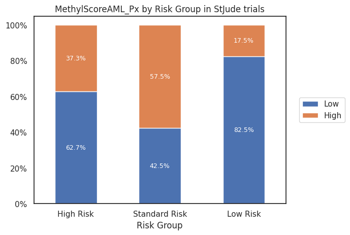
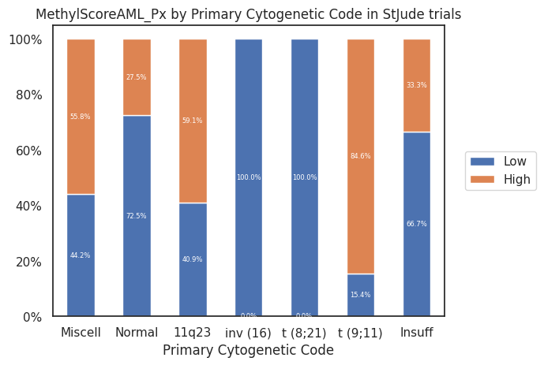
Patient Characteristics Table#
Overall study population#
Show code cell source
from tableone import TableOne
columns = ['Age (years)','Age group (years)','Sex','Race or ethnic group',
'Hispanic or Latino ethnic group', 'MRD 1 Status',
'Leucocyte counts (10⁹/L)', 'BM Leukemic blasts (%)',
'Risk Group', 'Clinical Trial','FLT3 ITD','Treatment Arm']
validation_clinical_data['Age (years)'] = validation_clinical_data['Age (years)'].astype(float)
mytable_cog = TableOne(validation_clinical_data, columns,
overall=False, missing=True,
pval=False, pval_adjust=False,
htest_name=True,dip_test=True,
tukey_test=True, normal_test=True,
order={'FLT3 ITD':['Yes','No'],
'Race or ethnic group':['White','Black or African American','Asian'],
'MRD 1 Status': ['Positive'],
'Risk Group': ['High Risk', 'Standard Risk'],
'FLT3 ITD': ['Yes'],
'Leucocyte counts (10⁹/L)': ['≥30'],
'Age group (years)': ['≥10']})
mytable_cog.to_csv(output_path + 'multivariate_cox_lasso/tableone_validation_cohort.csv')
mytable_cog.tabulate(tablefmt="html",
headers=[score_name,"",'Missing','Validation Cohort'])
| MethylScoreAML_Px | Missing | Validation Cohort | |
|---|---|---|---|
| n | 201 | ||
| Age (years), mean (SD) | 2 | 8.8 (6.0) | |
| Age group (years), n (%) | ≥10 | 2 | 95 (47.7) |
| <10 | 104 (52.3) | ||
| Sex, n (%) | Female | 0 | 87 (43.3) |
| Male | 114 (56.7) | ||
| Race or ethnic group, n (%) | White | 2 | 143 (71.9) |
| Black or African American | 32 (16.1) | ||
| Asian | 1 (0.5) | ||
| Native Hawaiian or other Pacific Islander | 2 (1.0) | ||
| Other | 21 (10.6) | ||
| Hispanic or Latino ethnic group, n (%) | Hispanic or Latino | 2 | 25 (12.6) |
| Not Hispanic or Latino | 174 (87.4) | ||
| MRD 1 Status, n (%) | Positive | 12 | 76 (40.2) |
| Negative | 113 (59.8) | ||
| Leucocyte counts (10⁹/L), n (%) | ≥30 | 1 | 88 (44.0) |
| <30 | 112 (56.0) | ||
| BM Leukemic blasts (%), mean (SD) | 21 | 60.0 (25.6) | |
| Risk Group, n (%) | High Risk | 0 | 51 (25.4) |
| Standard Risk | 87 (43.3) | ||
| Low Risk | 63 (31.3) | ||
| Clinical Trial, n (%) | AML02 | 0 | 159 (79.1) |
| AML08 | 42 (20.9) | ||
| FLT3 ITD, n (%) | Yes | 2 | 31 (15.6) |
| No | 168 (84.4) | ||
| Treatment Arm, n (%) | Arm A | 2 | 107 (53.8) |
| Arm B | 92 (46.2) |
Including both discovery and validation cohorts#
Show code cell source
# Load clinical data
discovery_clinical_data = pd.read_csv(input_path+'discovery_clinical_data.csv',
low_memory=False, index_col=0)
discovery_clinical_data['Age (years)'] = discovery_clinical_data['Age (years)'].astype(float)
px = discovery_clinical_data.loc[ewas_top_cpgs.index]
dx = discovery_clinical_data[~discovery_clinical_data['ELN AML 2022 Diagnosis'].isin(['Mixed phenotype acute leukemia T/myeloid',
'Myeloid leukaemia associated with Down syndrome',
'AML with t(9;22)(q34.1;q11.2)/BCR::ABL1'])]
dx = dx[~dx['ELN AML 2022 Diagnosis'].isna()]
# Use only samples from df_index
dx = dx[dx.index.isin(pd.read_csv(output_path+'pacmap_output/pacmap_5d_output_acute_leukemia.csv', index_col=1).index)]
# join discovery clinical data with validation clinical data
all_cohorts = pd.concat([dx, px, validation_clinical_data],
axis=0, keys=['MethylScoreAML Dx Discovery','MethylScoreAML Px Discovery' ,'Validation'],
names=['cohort']).reset_index()
columns = ['Age group (years)','Sex', 'MRD 1 Status',
'Leucocyte counts (10⁹/L)',
'Risk Group','FLT3 ITD', 'Treatment Arm','Clinical Trial']
mytable_cog = TableOne(all_cohorts, columns,
overall=False, missing=False,
pval=False, pval_adjust=False,
htest_name=True,dip_test=True,
tukey_test=True, normal_test=True,
order={'FLT3 ITD':['Yes','No'],
'Race or ethnic group':['White','Black or African American','Asian'],
'MRD 1 Status': ['Positive'],
'Risk Group': ['High Risk', 'Standard Risk'],
'FLT3 ITD': ['Yes'],
'Leucocyte counts (10⁹/L)': ['≥30'],
'Age group (years)': ['≥10']},
groupby='cohort')
mytable_cog.to_excel('data/tableone_both_cohorts.xlsx')
mytable_cog.tabulate(tablefmt="html",
# headers=[score_name,"",score_name,'Validation','p-value','Statistical Test']
)
| MethylScoreAML Dx Discovery | MethylScoreAML Px Discovery | Validation | ||
|---|---|---|---|---|
| n | 1399 | 924 | 201 | |
| Age group (years), n (%) | ≥10 | 516 (47.6) | 452 (48.9) | 95 (47.7) |
| <10 | 567 (52.4) | 472 (51.1) | 104 (52.3) | |
| Sex, n (%) | Female | 658 (50.7) | 457 (49.5) | 87 (43.3) |
| Male | 640 (49.3) | 467 (50.5) | 114 (56.7) | |
| MRD 1 Status, n (%) | Positive | 270 (28.9) | 251 (31.1) | 76 (40.2) |
| Negative | 663 (71.1) | 555 (68.9) | 113 (59.8) | |
| Leucocyte counts (10⁹/L), n (%) | ≥30 | 566 (52.7) | 453 (49.0) | 88 (44.0) |
| <30 | 508 (47.3) | 471 (51.0) | 112 (56.0) | |
| Risk Group, n (%) | High Risk | 125 (11.3) | 126 (13.8) | 51 (25.4) |
| Standard Risk | 501 (45.3) | 443 (48.7) | 87 (43.3) | |
| Low Risk | 480 (43.4) | 341 (37.5) | 63 (31.3) | |
| FLT3 ITD, n (%) | Yes | 178 (16.5) | 162 (17.6) | 31 (15.6) |
| No | 903 (83.5) | 760 (82.4) | 168 (84.4) | |
| Treatment Arm, n (%) | Arm A | 242 (43.6) | 252 (47.9) | 107 (53.8) |
| Arm B | 313 (56.4) | 274 (52.1) | 92 (46.2) | |
| Clinical Trial, n (%) | AAML03P1 | 60 (4.3) | 36 (3.9) | |
| AAML0531 | 496 (35.5) | 491 (53.1) | ||
| AAML1031 | 487 (34.8) | 397 (43.0) | ||
| Beat AML Consortium | 182 (13.0) | |||
| CCG2961 | 31 (2.2) | |||
| CETLAM SMD-09 (MDS-tAML) | 83 (5.9) | |||
| Japanese AML05 | 9 (0.6) | |||
| TCGA AML | 51 (3.6) | |||
| AML02 | 159 (79.1) | |||
| AML08 | 42 (20.9) |
By MethylScore category#
Show code cell source
from tableone import TableOne
columns = ['Age (years)','Age group (years)','Sex','Race or ethnic group',
'Hispanic or Latino ethnic group', 'MRD 1 Status',
'Leucocyte counts (10⁹/L)', 'BM Leukemic blasts (%)',
'Risk Group', 'Clinical Trial','FLT3 ITD']
validation_clinical_data['Age (years)'] = validation_clinical_data['Age (years)'].astype(float)
mytable_cog = TableOne(validation_clinical_data, columns,
overall=False, missing=True,
pval=True, pval_adjust=False,
htest_name=True,dip_test=True,
tukey_test=True, normal_test=True,
order={'FLT3 ITD':['Yes','No'],
'Race or ethnic group':['White','Black or African American','Asian'],
'MRD 1 Status': ['Positive'],
'Risk Group': ['High Risk', 'Standard Risk'],
'FLT3 ITD': ['Yes'],
'Leucocyte counts (10⁹/L)': ['≥30'],
'Age group (years)': ['≥10']},
groupby=score_name + ' Categorical')
mytable_cog.to_csv(output_path + 'multivariate_cox_lasso/tableone_validation_methylscoreaml_px.csv')
mytable_cog.to_excel('data/tableone_validation_methylscoreaml_px.xlsx')
mytable_cog.tabulate(tablefmt="html",
headers=[score_name,"",'Missing','High','Low','p-value','Statistical Test'])
| MethylScoreAML_Px | Missing | High | Low | p-value | Statistical Test | |
|---|---|---|---|---|---|---|
| n | 121 | 80 | ||||
| Age (years), mean (SD) | 2 | 9.5 (5.6) | 7.6 (6.4) | 0.034 | Two Sample T-test | |
| Age group (years), n (%) | ≥10 | 2 | 61 (50.8) | 34 (43.0) | 0.351 | Chi-squared |
| <10 | 59 (49.2) | 45 (57.0) | ||||
| Sex, n (%) | Female | 0 | 46 (38.0) | 41 (51.2) | 0.088 | Chi-squared |
| Male | 75 (62.0) | 39 (48.8) | ||||
| Race or ethnic group, n (%) | White | 2 | 87 (71.9) | 56 (71.8) | 0.740 | Chi-squared (warning: expected count < 5) |
| Black or African American | 19 (15.7) | 13 (16.7) | ||||
| Asian | 1 (1.3) | |||||
| Native Hawaiian or other Pacific Islander | 1 (0.8) | 1 (1.3) | ||||
| Other | 14 (11.6) | 7 (9.0) | ||||
| Hispanic or Latino ethnic group, n (%) | Hispanic or Latino | 2 | 13 (10.8) | 12 (15.2) | 0.491 | Chi-squared |
| Not Hispanic or Latino | 107 (89.2) | 67 (84.8) | ||||
| MRD 1 Status, n (%) | Positive | 12 | 41 (36.0) | 35 (46.7) | 0.188 | Chi-squared |
| Negative | 73 (64.0) | 40 (53.3) | ||||
| Leucocyte counts (10⁹/L), n (%) | ≥30 | 1 | 54 (44.6) | 34 (43.0) | 0.940 | Chi-squared |
| <30 | 67 (55.4) | 45 (57.0) | ||||
| BM Leukemic blasts (%), mean (SD) | 21 | 55.8 (24.4) | 66.6 (26.3) | 0.006 | Two Sample T-test | |
| Risk Group, n (%) | High Risk | 0 | 32 (26.4) | 19 (23.8) | <0.001 | Chi-squared |
| Standard Risk | 37 (30.6) | 50 (62.5) | ||||
| Low Risk | 52 (43.0) | 11 (13.8) | ||||
| Clinical Trial, n (%) | AML02 | 0 | 99 (81.8) | 60 (75.0) | 0.324 | Chi-squared |
| AML08 | 22 (18.2) | 20 (25.0) | ||||
| FLT3 ITD, n (%) | Yes | 2 | 22 (18.3) | 9 (11.4) | 0.262 | Chi-squared |
| No | 98 (81.7) | 70 (88.6) |
Watermark#
Author: Francisco_Marchi@Lamba_Lab_UF
Python implementation: CPython
Python version : 3.8.16
IPython version : 8.12.2
pandas : 2.0.2
seaborn : 0.12.2
matplotlib : 3.7.1
tableone : 0.7.12
sklearn : 1.2.2
lifelines : 0.27.7
statannotations: 0.5.0
Compiler : GCC 11.3.0
OS : Linux
Release : 5.15.90.1-microsoft-standard-WSL2
Machine : x86_64
Processor : x86_64
CPU cores : 20
Architecture: 64bit